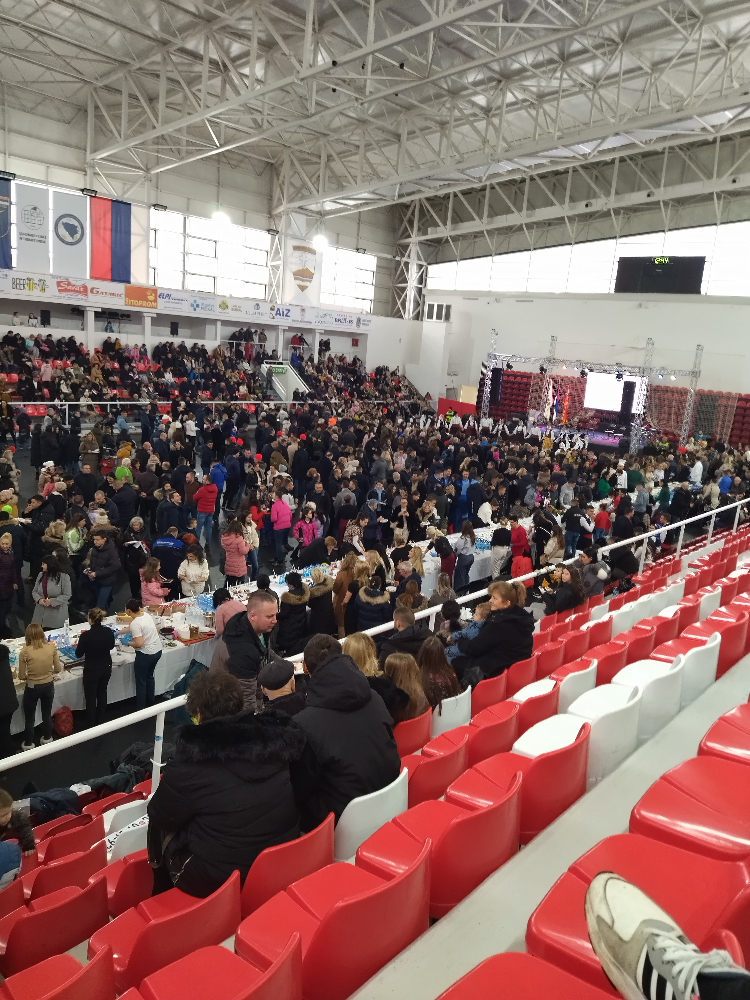
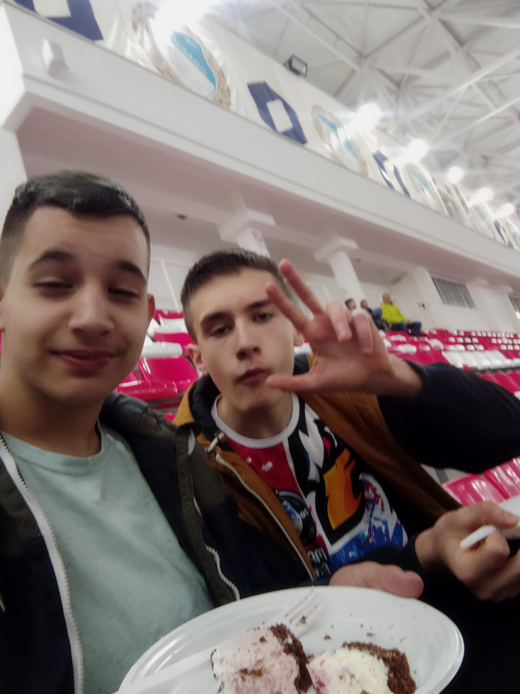
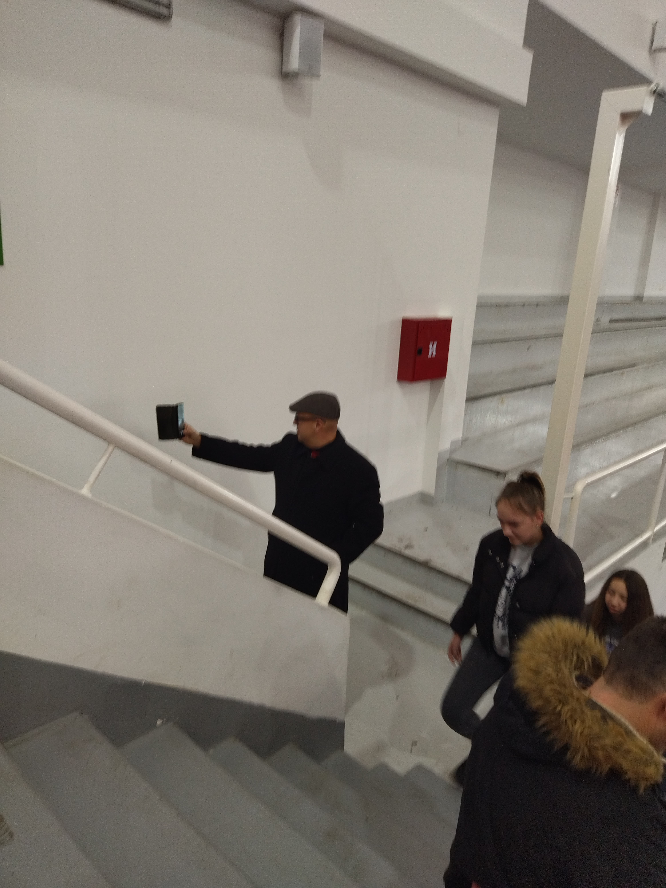
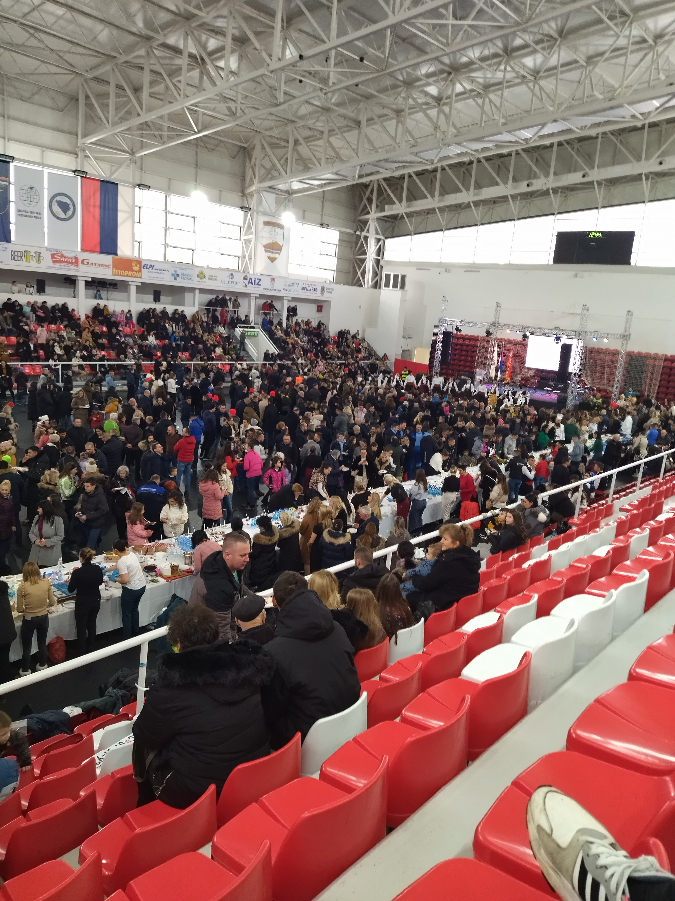
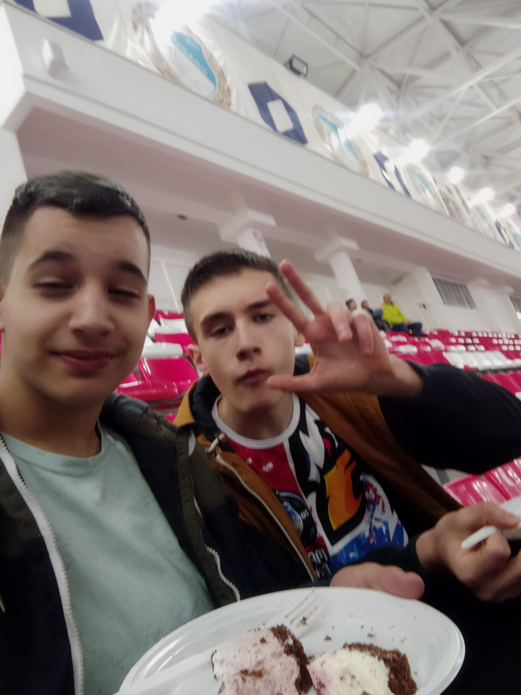
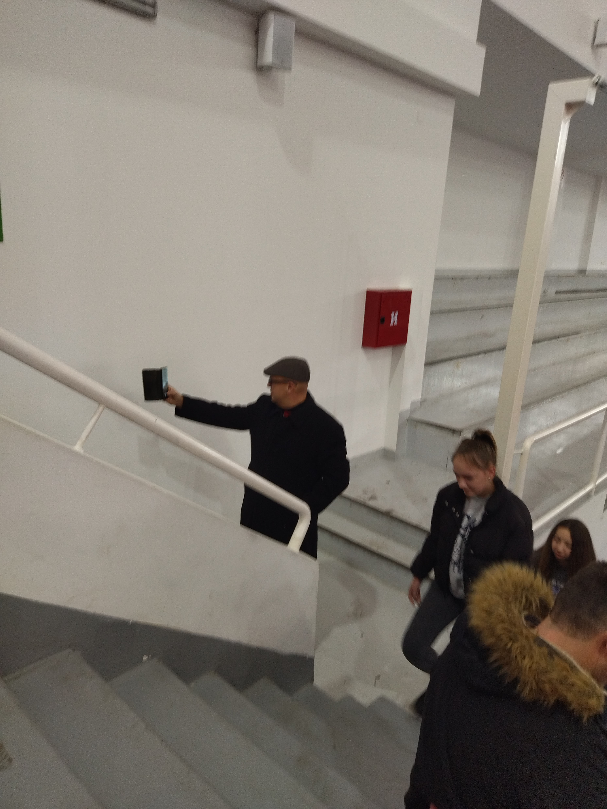

Republika Srpska, 9.januara 2024.godine, proslavila je svoj 32. rođendan. Dio organizacije proslave Dana Republike bili su i učenici osnovnih škola u našem gradu tako što su osmislili i maštovito uradili crteže sa motivima Republike Srpske. Vrijedni slastičari su prema tim motivima napravili 32 torte u čijem izgledu i ukusu su uživali mnogobrojni sugrađani.
Ljubav prema Republici Srpskoj i podršku ovoj manifestaciji iskazali su učenici i zaposleni naše škole, a četiri motiva su crteži naših talentovanih učenica: Sare Šakota, Nikoline Stojkanović, Anđele Stojkanović i Lare Stanojević. Dok je naša učenica Anđela Lazić tokom kulturno- umjetničkog programa kazivala je stihove pjesme "Republika Srpska".
 




